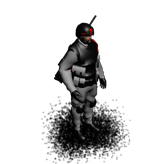

Militia
A militia unit can be formed by recruiting 100 colonists at a militia barracks.
Armed with gauss rifles but having little military training, this unit is
more suitable for defense than offense and can be used as garrison forces
in colonies.

| Movement points |
1 |
| Attack |
10 |
| Defense |
20 |
| Production cost |
4000 |
| Upkeep cost |
40 |
| Exploration radius |
1 |
Can move on:
- Plains
- Desert
- Wasteland
- Tundra
- Crater
- Hills